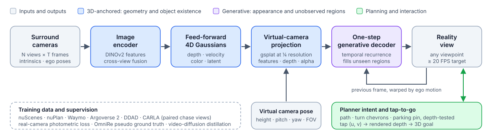

1 · Lift
N cameras × T frames pass through an image encoder; every feature cell becomes a pixel-aligned Gaussian with depth, color, latent features and velocity.
Open source · Feed-forward · Generative · Real-time
Feed-forward generative 3D driving visualization from surround cameras.
Any virtual camera. Real time. Faithful to what the cameras saw.
With FSD v15, Tesla introduced Reality View: a real-time generative view of the car's surroundings, streamed from a virtual camera above the vehicle and rendered by the same end-to-end network that drives it. Open Reality View builds this class of system in the open, from public data and open components.
A feed-forward network lifts surround-camera video into 3D Gaussians in a single pass. The Gaussians are projected into any virtual camera at low resolution, and a light one-step generative decoder turns that render into a clean, temporally stable frame, filling in what no camera saw. Geometry and object existence always come from the 3D anchors; the generator only paints appearance, so the view stays faithful to the road.

1 · Lift
N cameras × T frames pass through an image encoder; every feature cell becomes a pixel-aligned Gaussian with depth, color, latent features and velocity.
2 · Project
The Gaussians are rasterized into the virtual camera at ¼ resolution, giving features, depth and an alpha map of what was observed.
3 · Generate
A one-step decoder upsamples the render, completes unobserved regions and stays stable by reusing the previous frame warped by ego motion.
4 · Interact
Planned path, turn chevrons and parking pins are drawn in 3D with depth testing; a tap on the view becomes a 3D goal for the planner.
Objects exist because the 3D representation says so, never because the generator invented them. Detect-on-render recall and hallucination rate are headline metrics.
No per-scene optimization: one pass from cameras to 3D, so it runs online on streets it has never seen.
Low-resolution feature rendering plus one-step decoding, targeting ≥ 20 FPS on a single consumer GPU.
Public datasets, open components and Apache-2.0 code, with every non-commercial asset labeled.
Videos are added as milestones land.
Data contract, virtual camera family, faithfulness metrics.
OmniRe reconstruction, chase-view rendering with per-pixel confidence, CARLA pairs.
Feed-forward Gaussians supervised on real and virtual views.
One-step decoder with adversarial training and video-diffusion distillation.
≥ 20 FPS on one GPU: low-resolution features, quantization, static-scene caching.
Shared backbone with an end-to-end planner on NAVSIM; tap-to-go.
One rendering head vs. explicit perception heads; does rendering help planning?
@misc{openrealityview2026,
title = {Open Reality View: Feed-forward Generative 3D Driving Visualization},
author = {{Open Reality View contributors}},
year = {2026},
howpublished = {\url{https://github.com/OpenRealityView/open-reality-view}}
}Open Reality View is an independent open-source research project. It is not affiliated with, endorsed by or sponsored by Tesla, Inc. Tesla, FSD and Reality View are mentioned only to describe the product that inspired this work; all trademarks belong to their owners. This is research software and must not be used to operate a vehicle.